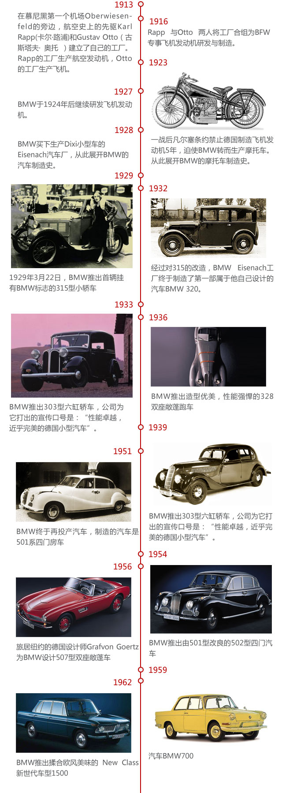

宝马之初：
每一个品牌都有着声名显赫的创始人——哥特里布-戴姆勒、卡尔-本茨（Mercedes-Benz的创始人）、奥古斯特-霍希（Audi的前身汽车联盟的创始人）、费迪南德-保时捷（Porsche的创始人），但是作为世界最受人尊敬的汽车品牌之一的BMW却很少提及它的开创者。 宝马在这方面的含蓄，让我们常常忽视了它尊贵的血统。宝马的缔造者，相比那些鼎鼎大名来说，不逞多让。他就是古斯塔夫-奥托(Gustav Otto)，德国历史上最伟大的飞机制造专家，而他的父亲尼古拉斯-奥古斯特-奥托(Nikolaus August Otto)则是著名的奥托内燃机的发明者。1876年，他制造出了人类历史上第一个四冲程循环发动机。德国社会和历史教科书中都将奥托父子之以很高的地位。甚至在中国高校大部分的热力学专业课程中都将“奥托循环”当作重要的基础内容讲授。
